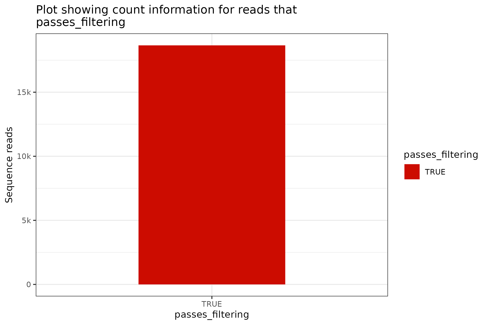
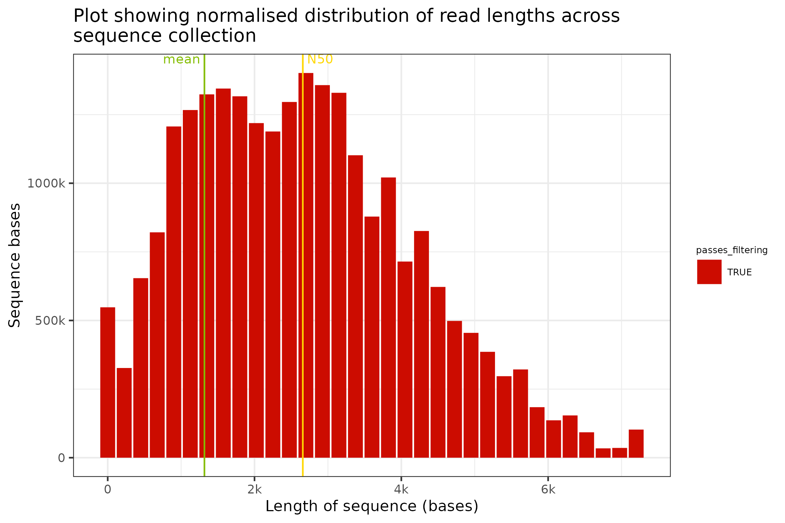

01_fasta_files.RmdThe fasta file format is one of the simplest file formats for sequence data and the files can contain either protein or nucleotide sequences. The fasta format contains a minimal amount of additional information or metadata.
The fasta file contains the following elements
> character is used as a field delimiterfirst_word after the > delimiter is used to identify the sequence name or accession
sequence is contained following the delimiter line (and until the EOF or subsequent delimiters) and may be either in the form of constant line width records or single monolithic sequence records.The information within the fasta record is thus limited to facets of the sequence itself - e.g. length.
There is not really any mystery or complication with fasta format sequence files - the functionality is provided within floundeR to support other applications and workflows. The fasta parsing functionality is provided by the Rsamtools package but could equally have been provided by numberous other packages such as ShortRead.
The aim of this vignette is to introduce the Fasta R6 object and to show how this can be used within the broader floundeR environment for producing tabular data and graphical visualisations.
The first step in a floundeR based fasta analysis is to load the floundeR package. We will also load a collection of other packages - please check the vignette code to see what has been loaded silently.
library(floundeR)
#> floundeR v0.0.5A fasta format sequence file is provided within the accompanying floundeR packaged data. Let’s have a quick look at a fasta format sequence file.
canonical_fasta <- flnDr("cluster_cons.fasta.bgz")
print(canonical_fasta)
#> [1] "/tmp/Rtmpqr71Kn/temp_libpath14ba6f8cb076/floundeR/extdata/cluster_cons.fasta.bgz"The extension of the file above shows that this is a bgzip compressed fasta file. This can be read directly using the R readLines command - let’s have a look at the first 10 lines contained within the file.
readLines(canonical_fasta, n=10)
#> [1] ">cluster_0 origin=rep_0_2424:1 length=3337 size=51930"
#> [2] "TAAAACTTACTCCTTCAAAATTACGGTTGATATCATTATTGACTATAAGACCTAATTAAT"
#> [3] "TTGTCCTTATTTGATTAAGAAGAATAAATCTTATATATAGATTTACAATCTATCGCCTAA"
#> [4] "ACCTAGCCACTTAATCAATAATCGCGACAATGATTATTTTCTACAAATCATAAAGATATC"
#> [5] "GGAACTTATATTTTATTTTTGGAGCTTGAGCTGGAATAGTTGGAACATCTTTAAGAATTT"
#> [6] "TAATTCGAGCTGAATTAAGGACATCCTGGAGCATTAATTGGAGATGATCAAATTTATAAT"
#> [7] "GTAATTGTAACTGCACATGCTTTCATTATAATTTTTTATAGTTATACCTATTATAATTGG"
#> [8] "TGGATTTGGAAATTGATTAGTGCCTTTAATATTAGGTGCTCCTGATATATCCACGAATAA"
#> [9] "ATAATATAAGATTTGACTTCTACCTCCTGTCTTTCTTTACTATTAGTAAGTAGAGATAGT"
#> [10] "TGAAAATGGAGCTGGGACAGGATGAACTGTTTATCCACCTCTATCCGCTGGAATTGCTCA"The output above should reflect the description in the preamble. Since this is an R package let’s also have a quick look at the file contents using the Rsamtools package instead.
fasta <- open(FaFile(canonical_fasta))
index <- scanFaIndex(fasta)
# how many fasta entries in file?
countFa(fasta)
#> [1] 18656
# let's pull out the first two entries
scanFa(fasta, index[1:2])
#> DNAStringSet object of length 2:
#> width seq names
#> [1] 3337 TAAAACTTACTCCTTCAAAATTA...TTCTAGAAGTAAATCAAAAAAAA cluster_0
#> [2] 3065 CTTTCGTTCTCAAACCGTCGTCC...AATATTGGAAATTGGAAAAGAAA cluster_1
# fasta is a connection and should thus be closed when done
close(fasta)This really covers the basics of fasta sequence handling using R. The objectives of floundeR are not to reproduce the capabilities of other packages but to simplify analyses.
floundeR Fasta R6 object.The floundeR package contained R6 objects to describe many bioinformatics data types. There is a simple constructor for loading a fasta format sequence file.
fasta <- Fasta$new(canonical_fasta)
#>
#> ── creating floundR::fasta with [cluster_cons.fasta.bgz] ───────────────────────
#> ℹ index for [cluster_cons.fasta.bgz] found
#> ℹ loading fasta index [cluster_cons.fasta.bgz.idx]
#> ✓ [18656] fasta entries parsed
print(fasta)
#> <floundeR::Fasta>
fasta$as_tibble()
#> # A tibble: 18,656 × 3
#> read_id sequence_length_template passes_filtering
#> <chr> <int> <lgl>
#> 1 cluster_0 3337 TRUE
#> 2 cluster_1 3065 TRUE
#> 3 cluster_2 1514 TRUE
#> 4 cluster_3 2048 TRUE
#> 5 cluster_4 4056 TRUE
#> 6 cluster_5 1278 TRUE
#> 7 cluster_6 1913 TRUE
#> 8 cluster_7 2104 TRUE
#> 9 cluster_8 3428 TRUE
#> 10 cluster_9 2913 TRUE
#> # … with 18,646 more rowsThat’s pretty lean data - not much to show or present.
Fasta object?As described in the previous section, there is not really very much information in the fasta sequence format other than the sequence itself. The Fasta R6 object can be exported as a SequencingSet object.
fasta %>% to_sequencing_set()
#> <floundeR::SequencingSet>The SequencingSet object can also be used to access simple but primitive summary statistics such as mean sequence length, N50 length etc
fasta$sequencingset$N50
#> [1] 2658
fasta$sequencingset$mean
#> [1] 1317.68The SequencingSet in turn has a collection of methods that can be used to structure and visualise the data. The first that we’ll have a look at is the $enumerate method that returns an Angenieux object for data visualisation.
knitr::include_graphics(
fasta$sequencingset$enumerate$to_file("figure_8.png")$plot()
)
#> Warning: The `.dots` argument of `group_by()` is deprecated as of dplyr 1.0.0.
#> This warning is displayed once every 8 hours.
#> Call `lifecycle::last_lifecycle_warnings()` to see where this warning was generated.
#> saving plot as [png]
The format for the plotting command is a little gnarly - please check the vignettes on the Angenieux R6 object for further details and information on the logic and control of the presentation.
The final plot that makes sense with just sequence data is a length distribution plot; this can be prepared with the command below. In this command we transform the Fasta object into a SequencingSet and we request that a distribution of binned sequence lengths be prepared.
knitr::include_graphics(
fasta$sequencingset$read_length_bins(bins=35, outliers=0.001)$to_file("figure_9.png")$plot(style="stacked")
)
#> saving plot as [png]
Fasta object …